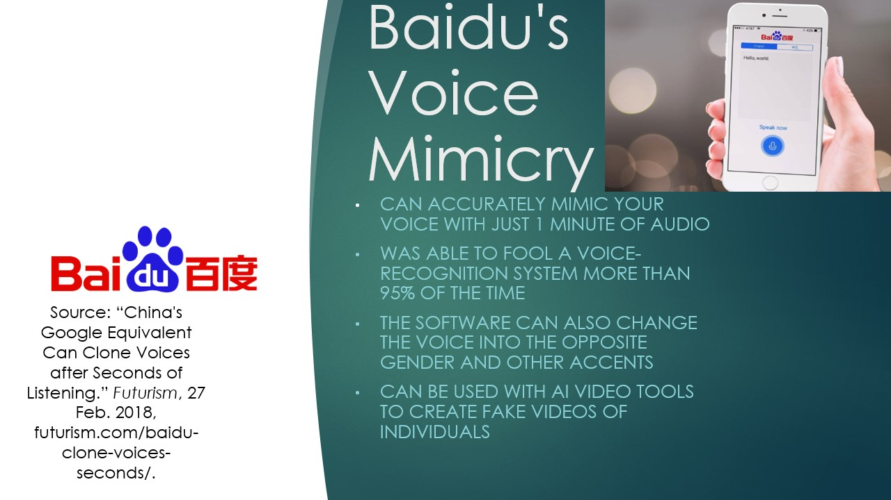
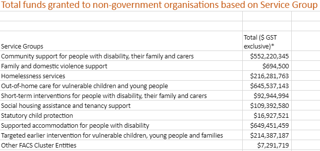
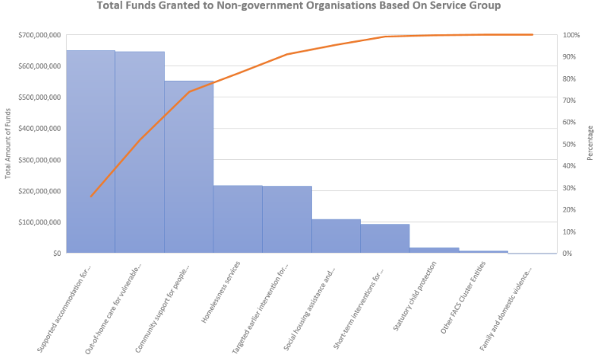
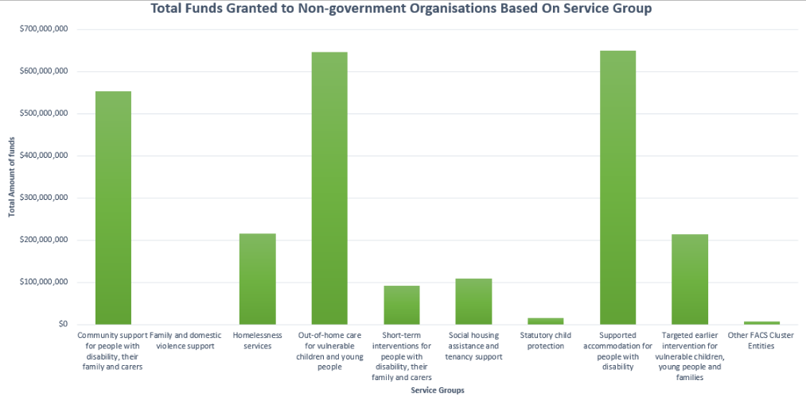

Purpose of the Presentation
Baidu's voice mimicry sole purpose is to mimic a person's voice just by a minute of audio. This technology uses big data to mimic a person's voice exact. This voice mimicry can be used for good deeds and for malicious deeds. You can use this along side clips of fake videos to fool people into believing that a person did and said something that they did not.
Data Analysis    Reflection
My partner and I looked into data about the total funds granted to non-government organizations. We looked at 10 service groups and documented how much many each service group was granted. The graph and the chart are a visual reprensentation of the funds granted. I learned that there is data for everything and taught me how to collect it all. Simulation Modification
The simulation that my partner and I modified was an AIDS simulation. My partner and I altered the rate at which people fall in love and how long those relationships last. We were curious on what types of circumstances were needed in order to get the entire populationso we made even more changes. We increased the frequentcy of copulation and decreased the average condom use. I learned that small changes in coding can have a huge effect on the outcome.